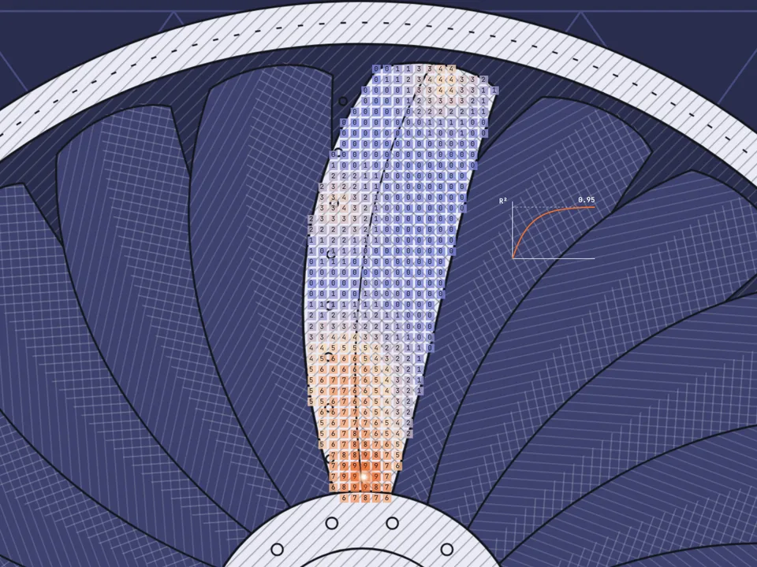
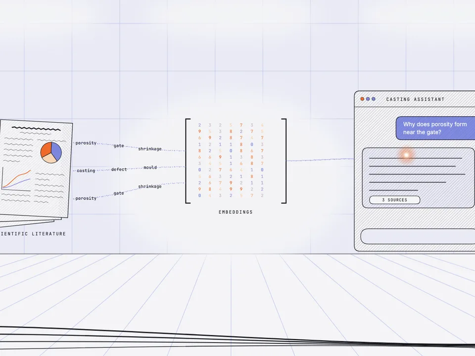
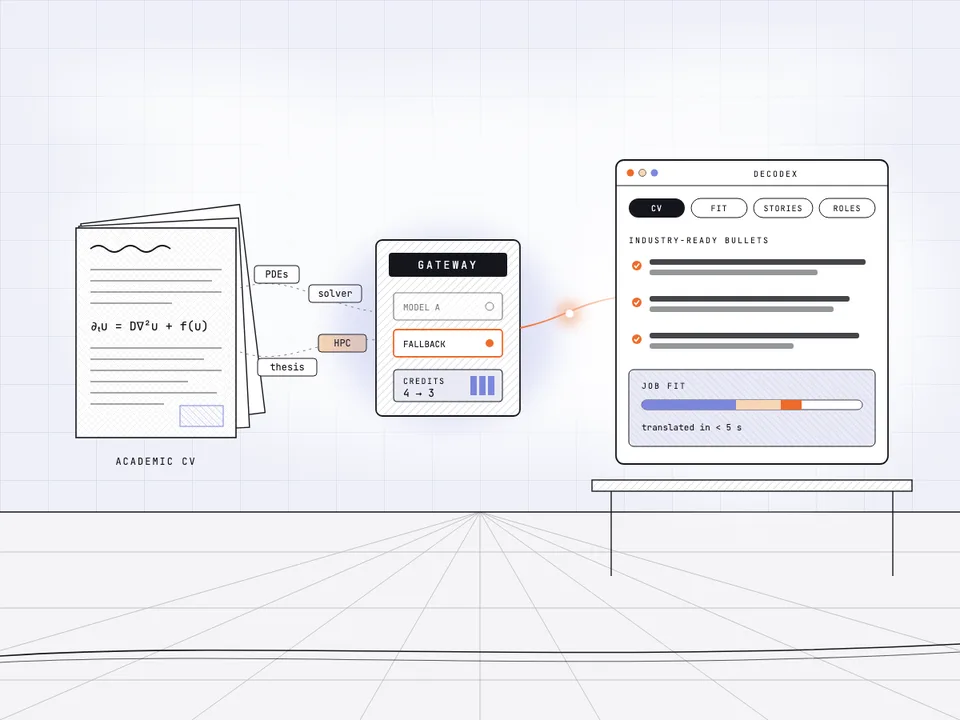

AI early-warning weather system, Tanzania
More than 20 data sources merged into one forecasting model, with alerts delivered in production by SMS and WhatsApp.
Work · 2019 to 2026
Production ML for industrial systems, a live LLM product, and the research underneath both.
Project 01 · PorosAI
Flagship · ACCESS e.V., Aachen · 2025 to presentI am the lead developer of PorosAI at ACCESS e.V. on the RWTH Aachen campus. It predicts porosity defects in aerospace investment casting at the design stage, so a foundry knows a part will fail before anyone pours metal. It went from idea to proof of concept to first external customer in 18 months.

inference, in place of solver runs of 45 minutes to 24 hours
less design-iteration time
point multiphysics dataset
manual simulation cycles saved per design
from idea to first external customer, as solo developer
accuracy on 3D point-cloud segmentation
Physics-informed surrogate models in Python, PyTorch and XGBoost, benchmarked against alternatives including PINNs. They are evaluated on geometries the models never saw in training, and they answer in under a second.
The optimizer runs the problem backwards: target quality in, design and process parameters out. That removes 5 to 6 manual simulation cycles from every design.
Design-of-Experiments campaigns in STAR-CCM+, MAGMASOFT and ProCAST on HPC, combined with CT scans and experimental measurements, make a multiphysics dataset of more than 2.75 million points.
Geometry-held-out evaluation, verification against experiments and CT scans, and expert review in the loop. Every prediction ships with a calibrated uncertainty.
A FastAPI backend and a Streamlit frontend with authentication and multi-tenant plans. MLflow and DVC track every run, and Docker and CI/CD gate every release on validation.
PointNet-based segmentation reads the part geometry directly and reaches 95 percent accuracy on 3D point clouds.
Project 02 · PorosAI assistant · In development
In development · PorosAIAn agentic assistant grounded in casting and metallurgy literature, built into PorosAI so that engineers can ask the field's research a question from inside the product.

Answers come from a curated casting knowledge base with a knowledge-graph backbone, not from the model's general memory, so every answer can point to where it came from.
The next step lets the assistant act inside PorosAI: pull the relevant prediction, compare it with the literature, and explain the difference to the engineer.
The idea began as PaperGraph, a prototype I built to teach myself the domain. More on that below.
Project 03 · Decodex · 40+ users
Live GenAI product · built and run soloDecodex translates academic CVs into industry language, checks job fit, builds interview stories, and maps PhD skills to industry roles, tuned for the German and European job market. I built it and I run it alone.
users signed up
LLM gateway, with automatic fallback
engineer, from design to operations

Every tool calls the same gateway: Claude with an automatic fallback model, credits deducted before each call, and a log of every request per tool and model.
Each tool has its own versioned prompt system, so a change to one tool cannot silently change another.
React and TypeScript on the front, Deno edge functions and Postgres with Auth on Supabase behind it, Stripe for payments, and GDPR-compliant storage.
Decodex is part of Academia to Industry, where I help PhDs move into industry.
Project 04 · PaperGraph · Prototype
PaperGraph is a working prototype: a knowledge graph with an LLM layer over casting and metallurgy literature. I built it to teach myself the domain, because I came to casting as a physicist, not a metallurgist. It never shipped as a product, and it did not need to. Its concepts became the backbone of the PorosAI assistant.
More than 20 data sources merged into one forecasting model, with alerts delivered in production by SMS and WhatsApp.
A machine-learning analysis of what drives pollution episodes in one of India's most polluted cities.
Sentiment, translation, question answering and summarization over car reviews with Hugging Face transformers and PyTorch.
View code